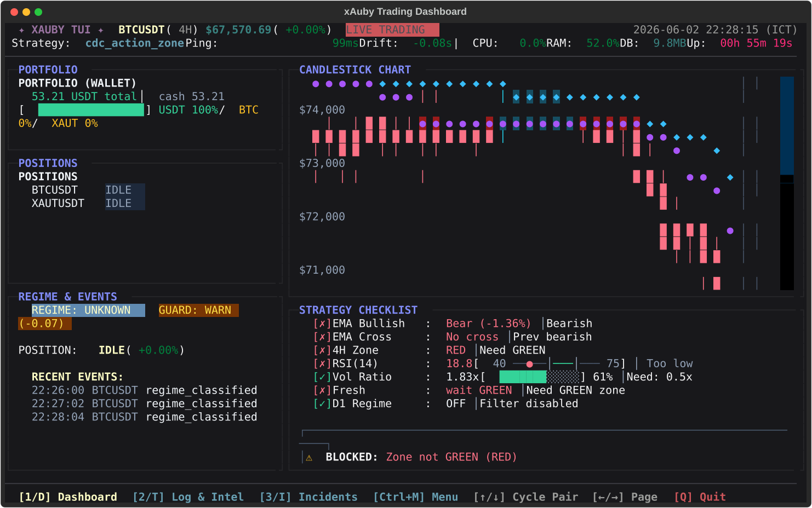
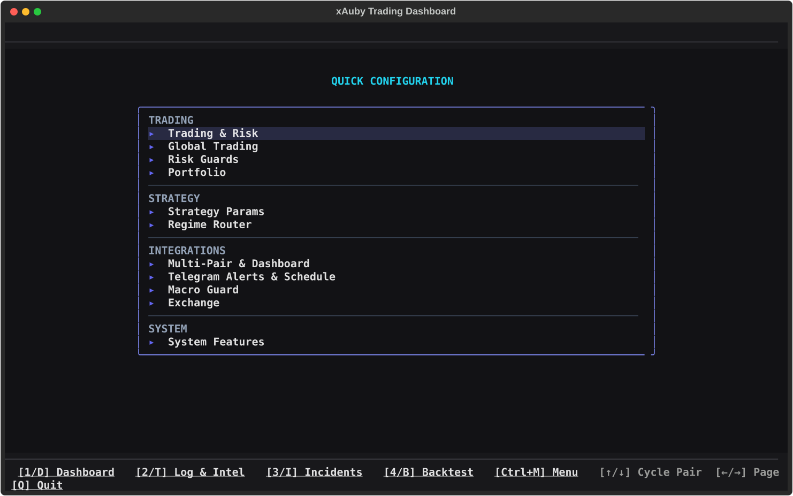

Position caps, daily loss controls, cooldowns, drawdown guard, slippage checks, and exchange-side stop-loss restoration keep the runtime defensive by default.
Operator-first trading automation
xAuby
A risk-aware trading system for alternative store-of-value markets, built around OKX XAUUSDT swap execution, simulation-first workflows, live dashboards, replay validation, and controlled operations.
Simulation to live
Exchange stop-loss protection
Textual TUI and mobile WebUI
Replay and incident review
Built for deliberate operators
xAuby is not a black-box signal seller. It is a transparent runtime for operators who want to inspect strategy behavior, validate risk, and control live execution before capital is exposed.
The committed runtime targets XAUUSDT on OKX USDT-settled swaps, with a pluggable exchange gateway for CCXT and native adapters.
Mobile WebUI, Textual dashboards, Telegram alerts, SQLite trades, JSONL events, and incident replay make decisions observable instead of opaque.
From testing to live operations
The workflow is designed to slow down risky decisions and make each promotion step measurable.
- 1Run simulation first. Confirm configuration, strategy routing, portfolio sizing, and event output without live orders.
- 2Replay and backtest. Validate live-config behavior against historical candles and incident windows.
- 3Check operational health. Review WebSocket freshness, logs, exchange connectivity, funding guard, and account state.
- 4Enable live gates deliberately. Live trading requires explicit mode flags, configured pair mode, and valid exchange credentials.
Decision signals in one place
The dashboard is built for repeated operator checks: market state, current position, PnL, partial take-profit status, recent events, and closed trade history.
- Primary market
- OKX XAUUSDT swap
- Execution style
- Long and short, 1x focused
- Control plane
- TUI, WebUI, Telegram
- Evidence trail
- SQLite, JSONL, replay
Real operator screens
Inspect the runtime through interfaces designed for actual trading operations, not marketing screenshots.



What helps a serious trader decide
The system surfaces the details that matter before going live: risk posture, execution readiness, strategy context, and recovery paths.
Clear live readiness gates
Simulation, explicit live flags, pair-level mode, credentials, and health checks all have to line up before live operation makes sense.
Operational safety over speed
Emergency pause, account locks, startup reconciliation, and stop-loss restoration are built for controlled operation on a VPS.
Strategy transparency
Per-pair strategy selection, indicator panels, chart overlays, and replay tooling make behavior inspectable.
Security posture documented
WebUI auth, secret scanning, path isolation, and SaaS residual risks are documented for operators considering hosted deployments.
Start with simulation. Promote only after evidence.
Clone the repository, run the bot in simulation, inspect the dashboards, and review the security baseline before considering live capital or hosted deployment.